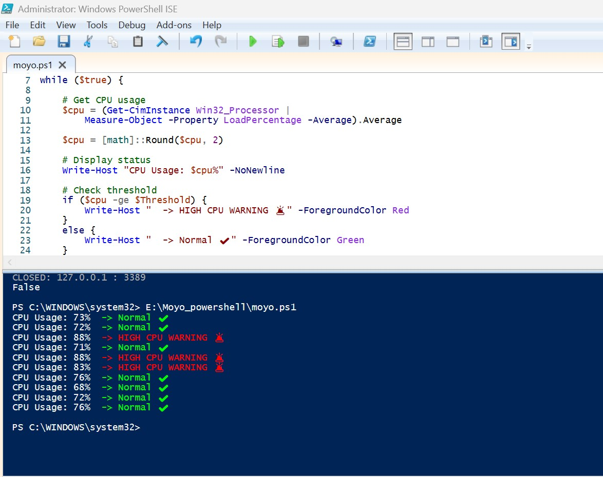
CPU Monitoring Script
What This Script Does
Every 5 seconds:
- Reads CPU usage
- Compares it with a threshold (80%)
- Shows status in terminal
- Warns if CPU is too high
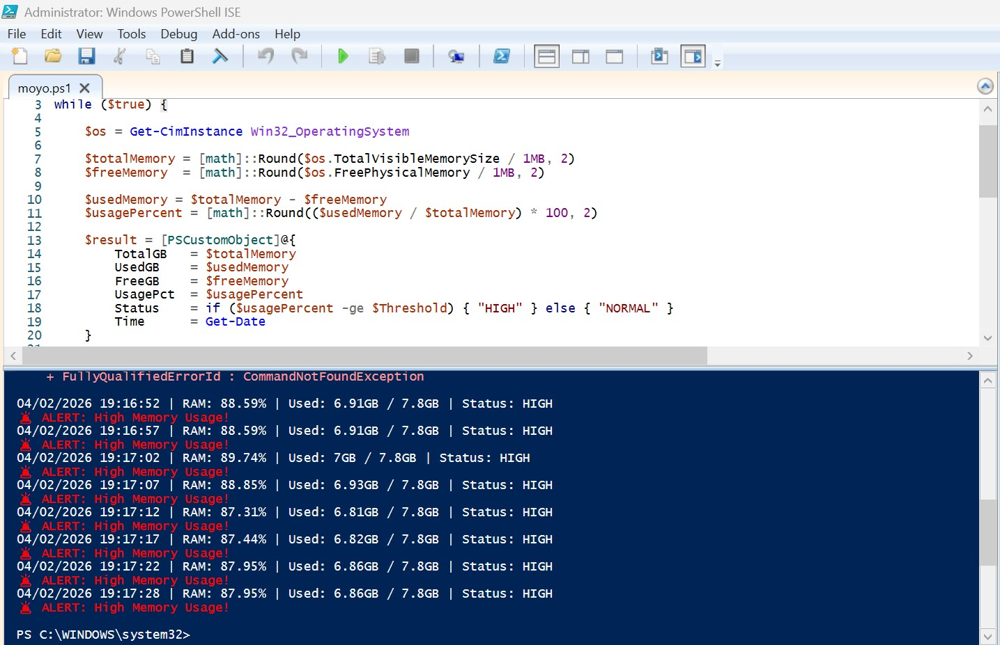
Memory Usage Check
What I Have Learned
- How RAM is measured in PowerShell
- Converting KB → GB (/ 1MB)
- Calculating percentage usage
- Real-time monitoring loops
- Alert systems
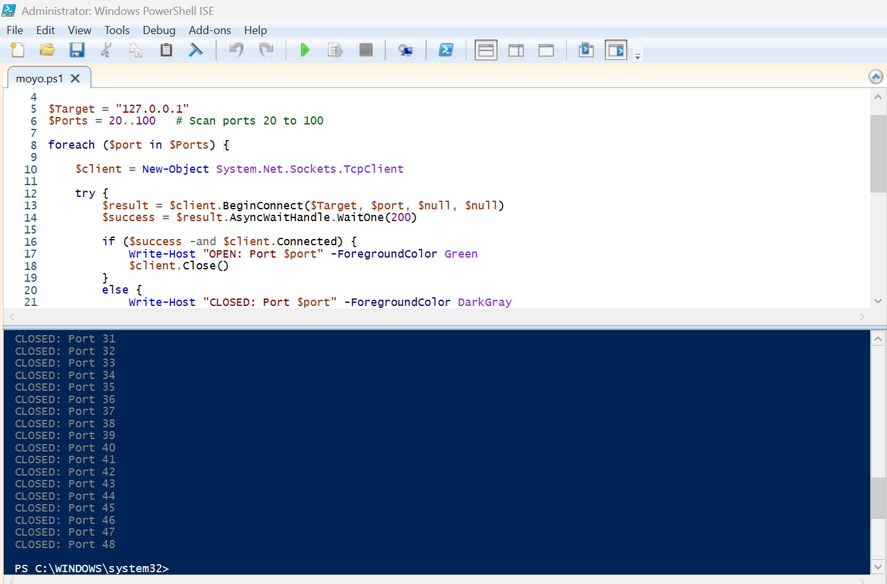
Port Scanner Script
Skills Demonstrated
- TCP connections using .NET in PowerShell
- Scanning multiple ports
- Using loops (foreach, while)
- Real-time monitoring
- Alert systems
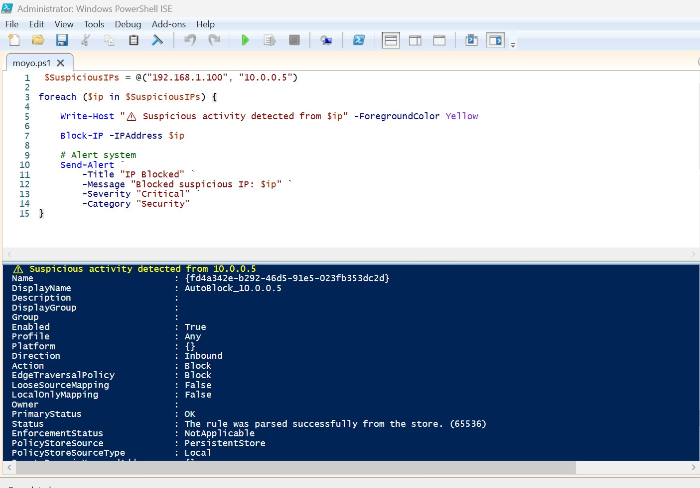
Auto Firewall Blocking
What This Demonstrates
- Security skills
- Windows Firewall automation
- Blocking malicious IPs
- Intrusion response
- Threat detection simulation
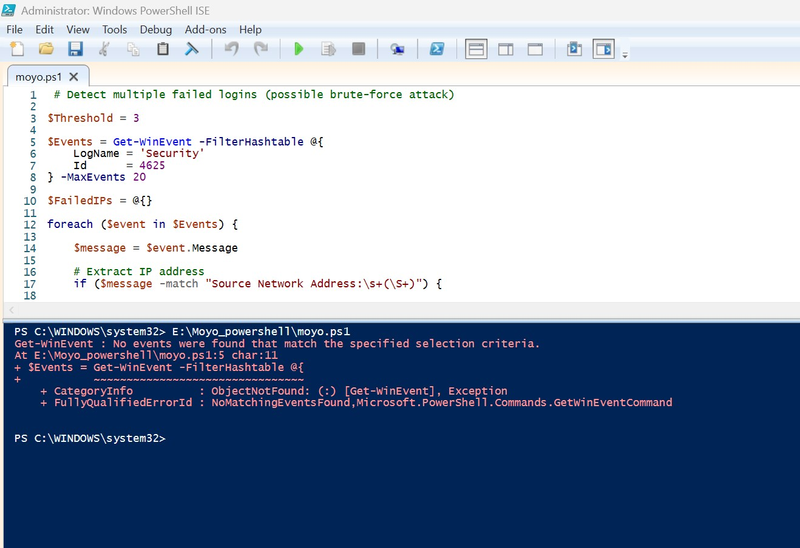
Event Log Analysis
🔐 Cybersecurity Skills
- Reading Windows Security Logs
- Detecting failed logins (Event ID 4625)
- Identifying brute-force attacks
- Extracting IP addresses from logs
- Triggering alerts
- Automated response (blocking attacker)
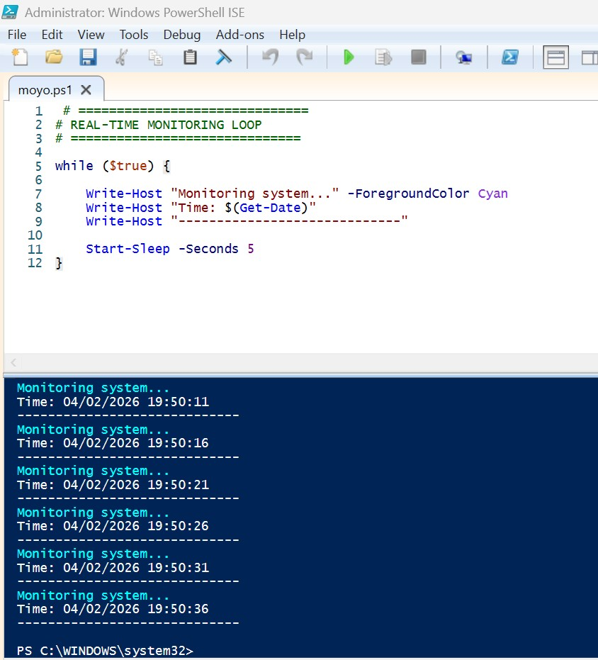
Real-Time Monitoring Loop
Monitoring Concepts
- Continuous system monitoring
- While loops for persistent checks
- Sleep intervals for resource management
- Status reporting mechanisms
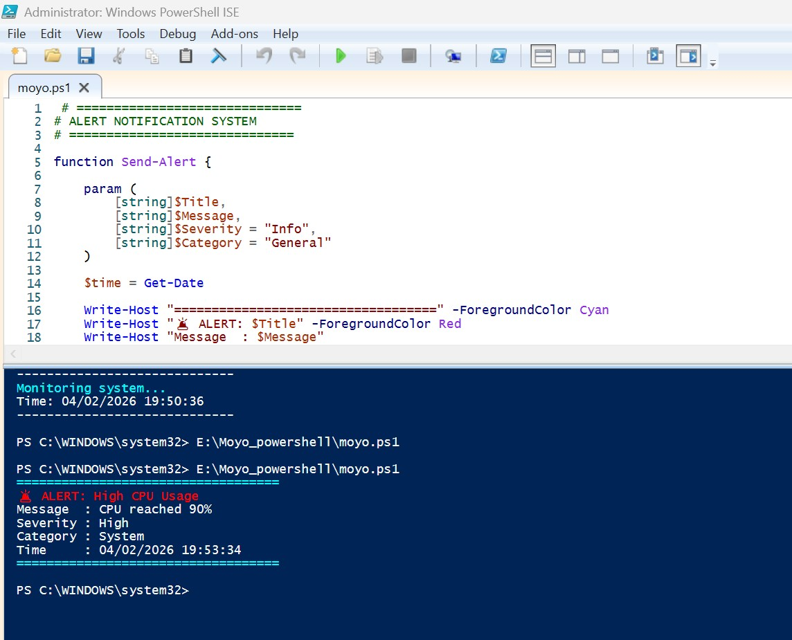
Alert Notification System
Alert System Skills
- Creating reusable functions
- Structured alert messages
- Logging for auditing
- Real-time notifications
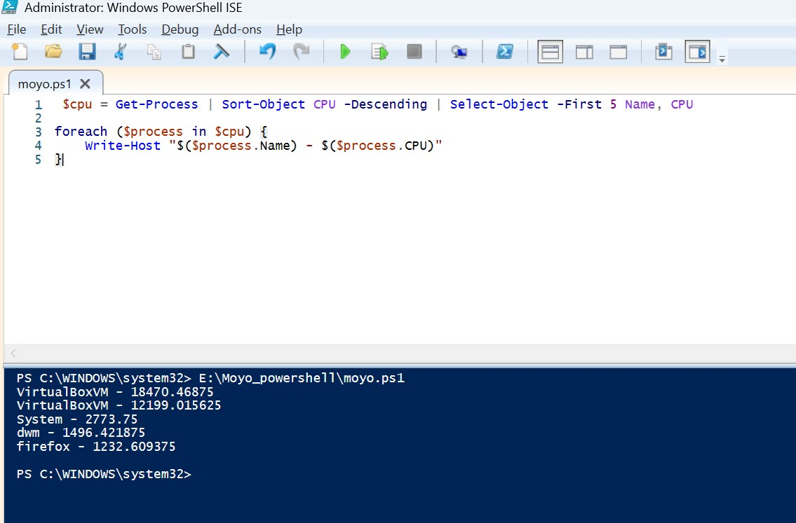
PowerShell Scripting Code 1
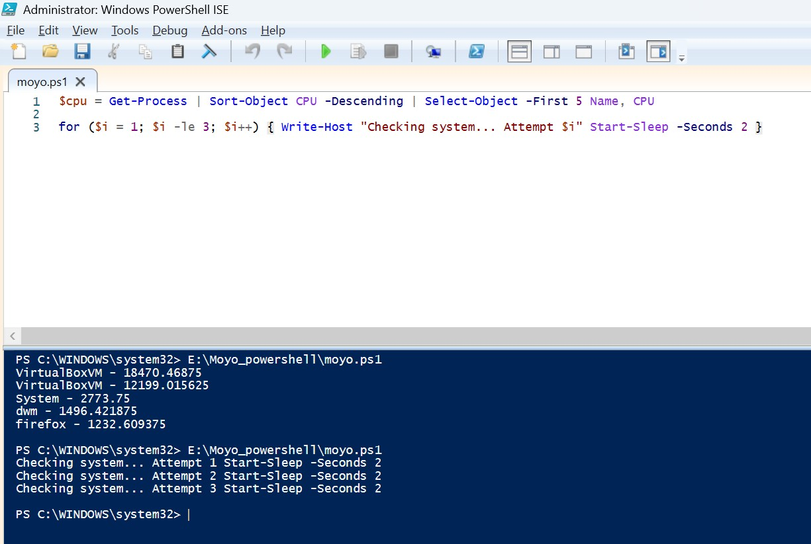
PowerShell Scripting Code 2
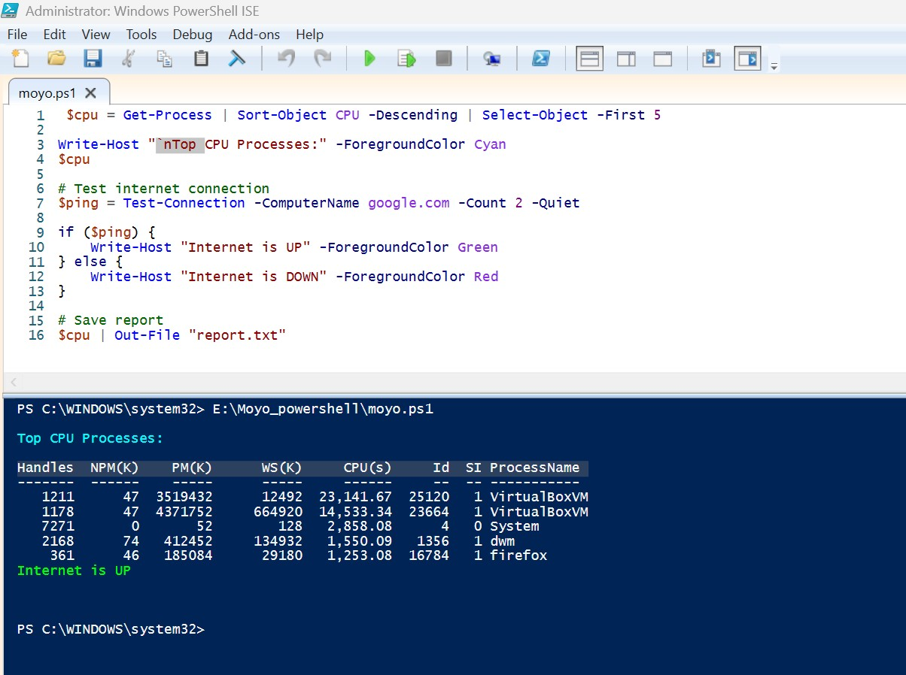
PowerShell Scripting Code 3
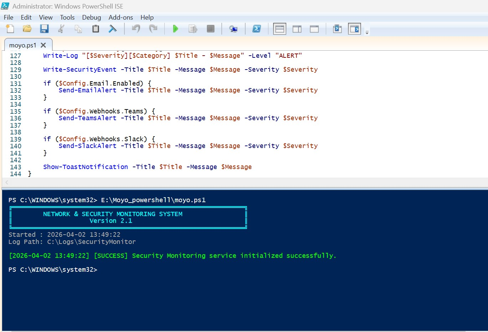
PowerShell Scripting Code 4
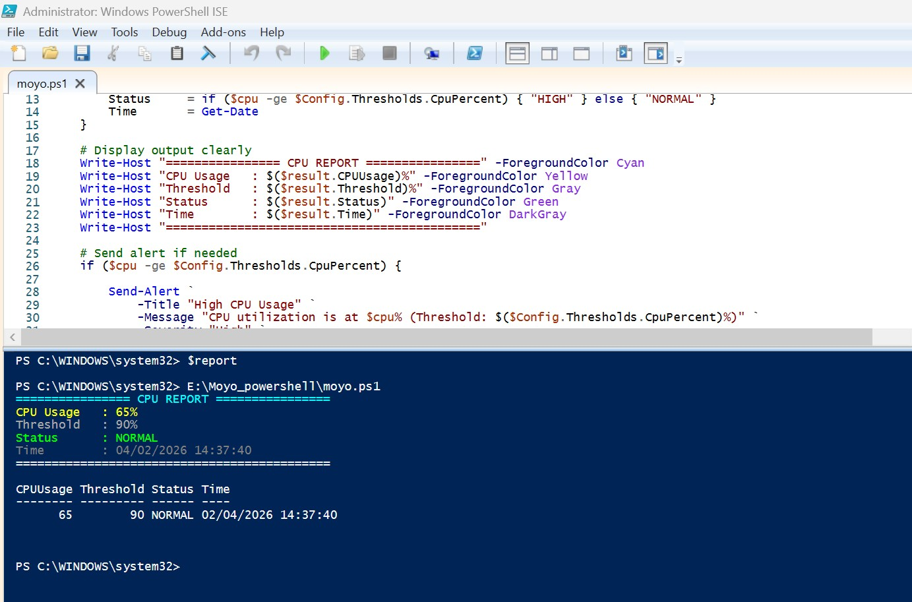
PowerShell Scripting Code 5
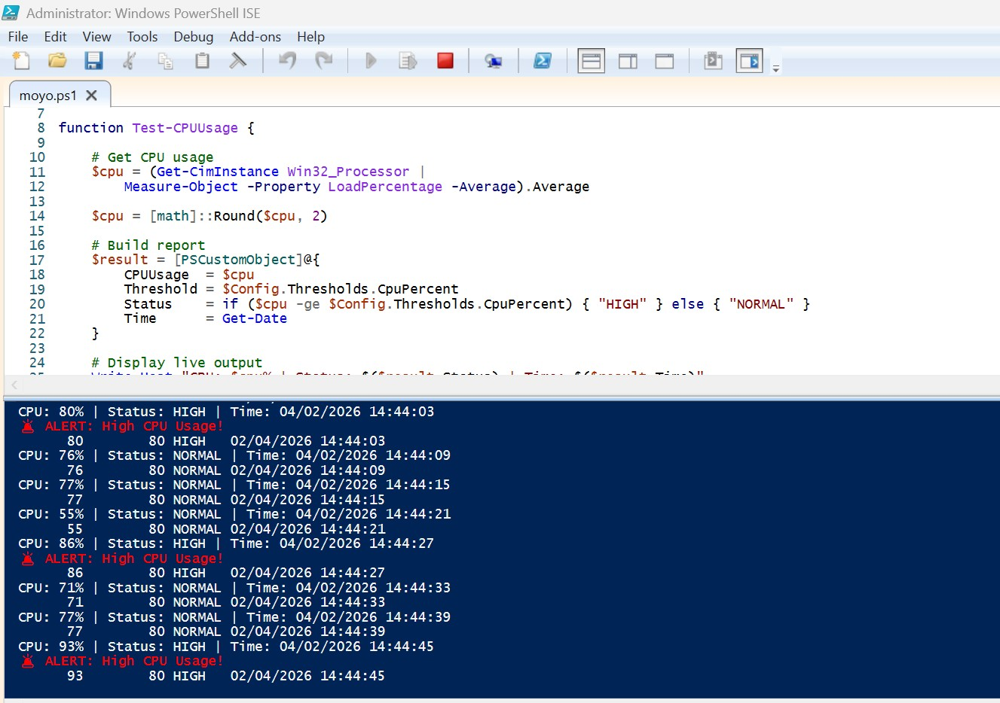
PowerShell Scripting Code 6
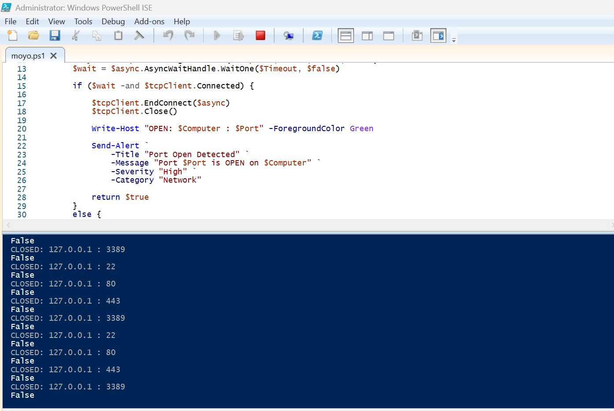
PowerShell Scripting Code 7